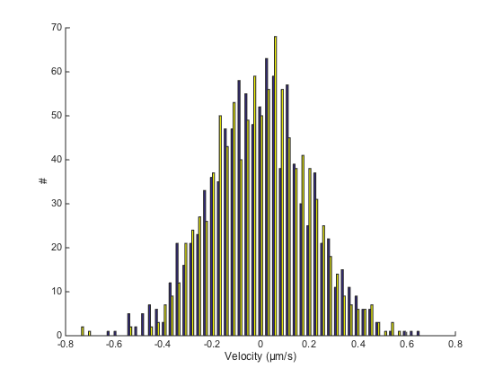
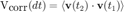
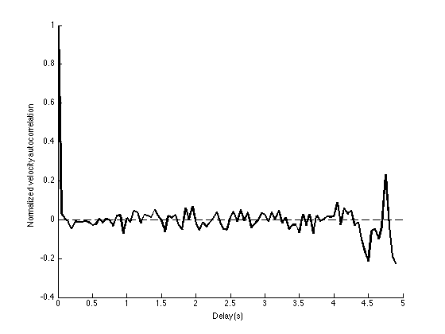

Velocities and velocity auto-correlation.
Contents
Generating tracks.
Like previously:
close all clear all clc SPACE_UNITS = 'µm'; TIME_UNITS = 's'; SIZE = 2; % µm N_PARTICLES = 10; N_TIME_STEPS = 100; N_DIM = 2; % 2D D = 1e-3; % µm^2/s dT = 0.05; % s k = sqrt(2 * D * dT); tracks = cell(N_PARTICLES, 1); for i = 1 : N_PARTICLES time = (0 : N_TIME_STEPS-1)' * dT; X0 = SIZE .* rand(1, N_DIM); % Integrate uncorrelated displacement dX = k * randn(N_TIME_STEPS, N_DIM); dX(1, :) = X0; X = cumsum(dX, 1); % Store tracks{i} = [time X]; end clear i X dX time X0 ma = msdanalyzer(2, SPACE_UNITS, TIME_UNITS); ma = ma.addAll(tracks);
Velocity analysis.
We can first check that the generated displacement are random by plotting their histogram. Rather than the displacement, we use the instantaneous velocity, in case we have displacements computed over varying frame interval:
v = ma.getVelocities %#ok<NOPTS>
v =
[99x3 double]
[99x3 double]
[99x3 double]
[99x3 double]
[99x3 double]
[99x3 double]
[99x3 double]
[99x3 double]
[99x3 double]
[99x3 double]
The velocities are returned in the shape of one 3D double array, arranged as for MSD curves: [T Vx Vy ...] Let's pool all particles together:
V = vertcat( v{:} );
We can plot the histogram for velocities in X and Y separately:
hist(V(:, 2:end), 50) % we don't want to include the time in the histogram box off xlabel([ 'Velocity (' SPACE_UNITS '/' TIME_UNITS ')' ]) ylabel('#')
For Brownian motion, these two histograms must be symetric and centered on 0. They actually are Gaussian of mean 0 and standard deviation k / dT.
mean(V(:,2:end))
ans = -0.0082 -0.0010
std(V(:,2:end))
ans =
0.2028 0.1931
k/dT %#ok<NOPTS>
ans =
0.2000
Velocity autocorrelation.
Velocity auto-correlation is another way of checking the movement type. It is a value that basically tells until when the particle "remembers" its previous movements. Like for the MSD, it is a time-averaged value, defined over a delay domain. If t1 and t2 are such that dt=t2-t1, then the velocity autocorrelation is defined by:

v is the instantaneous velocity vector and the product is the dot product. The average is taken on all t1 and t2 such that dt=t2-t1.
For Brownian motion, the displacements are completely uncorrelated, so the velocity autocorrelation should be 0 for every delay, except dt=0.
msdanalyzer does the computation for you:
% we use a syntax close to the one we used for MSD curves
ma = ma.computeVCorr;
ma.vcorr
Computing velocity autocorrelation of 10 tracks... Done.
ans =
[99x4 double]
[99x4 double]
[99x4 double]
[99x4 double]
[99x4 double]
[99x4 double]
[99x4 double]
[99x4 double]
[99x4 double]
[99x4 double]
Like for MSD curves, the velocity correlation is returned in a double array, one for each particle. The data is arranged as follow: [dt mean std N]. However, we return normalized autocorrelation, so that for dt=0 we get vcorr=1.
There is just one method to plot the ensemble mean of the function:
ma.plotMeanVCorr
We see that apart from dt=0, the autocorrelation is 0 everywhere, which is what is expected for pure Brownian motion. We will soon study cases where this is not the case anymore.